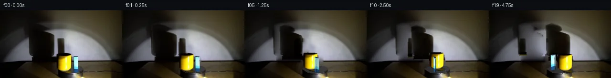
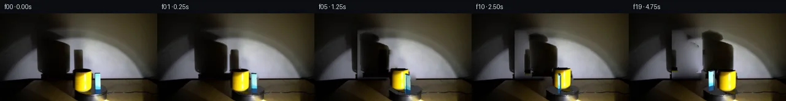
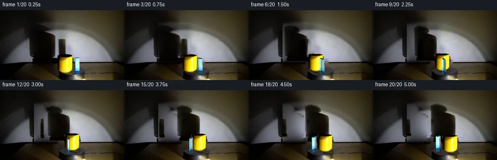
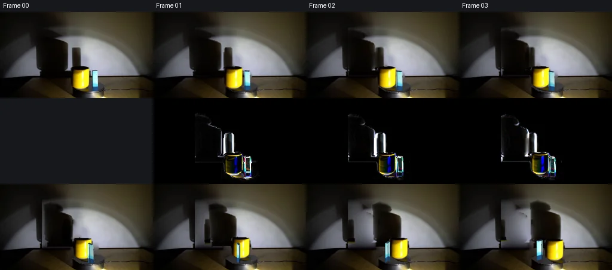

V0 · 初版
2026-11-05T04:26:26.004514+00:00 · RGB 755d5b4eddbd
![]()
Observable Generation Trace
把最终像素视频、Harness 冻结的每轮候选、真实工具事件和 Agent 自述放在同一页。可观测证据与模型自述分开标记，避免把“模型说它检查过”误当成真实工具调用。
![首帧]()
Static locked-off single-shot with fixed frame throughout filmed with constant framerate in real-time. The scene shows a realistic scientific demonstration. The scene only contains the described setup and actions. The yellow mug and the blue rectangular block sit on the black, clockwise-rotating platform, and the spotlight points toward the yellow mug and the block. The yellow mug and the blue rectangular block are rotating clockwise around the center of the black rotating platform, while the spotlight casts a large shadow on the wall behind it.
首帧显示在左侧播放器初始画面。Track 权限、隔离和 tensor 一致性来自 run manifest，而不是 METHOD.md。
默认勾选初版和最终版；可选其他版本一起同步播放。仅检查图更新的连续重复快照已合并，回退旧视频仍保留为一次修订。
Observable events
来源：events.jsonl + run manifest
此 Track 禁止读取输出图片。逐轮预览由外部 Harness 自动冻结，只用于事后审计，生成 Agent 当时看不到这些页面。
Frozen candidates
每张图来自该 round 的真实 00 / 01 / 05 / 10 / 19 帧

pixels 56e819a5faf84efd · code 84b1e84bc4767fe8
--- previous/generate.py
+++ current/generate.py
@@ -0,0 +1,242 @@
+"""Local RGB continuation: measured texture layers, plane rotation, and shadow warps."""
+from pathlib import Path
+import json
+import numpy as np
+from PIL import Image, ImageDraw
+from scipy import ndimage as ndi
+from scipy.sparse import lil_matrix
+from scipy.sparse.linalg import spsolve
+from artifact_io import save
+
+ROOT = Path(__file__).resolve().parent
+W,H,S=256,144,3
+src=np.asarray(Image.open(ROOT/'first_frame.png').convert('RGB')).astype(np.float64)
+yy,xx=np.mgrid[:H,:W]
+
+def polygon(points):
+ im=Image.new('L',(W,H));ImageDraw.Draw(im).polygon(points,fill=255)
+ return np.asarray(im,dtype=float)/255
+
+def harmonic(im,mask):
+ """Solve the discrete Laplace equation in a locally hidden image region."""
+ mask=mask>.5
+ ys,xs=np.where(mask);ids=np.full((H,W),-1,int);ids[ys,xs]=np.arange(len(xs))
+ a=lil_matrix((len(xs),len(xs)));rhs=np.zeros((len(xs),3))
+ for i,(y,x) in enumerate(zip(ys,xs)):
+ degree=0
+ for dy,dx in ((-1,0),(1,0),(0,-1),(0,1)):
+ v,u=y+dy,x+dx
+ if 0<=v<H and 0<=u<W:
+ degree+=1
+ if mask[v,u]: a[i,ids[v,u]]=-1
+ else:rhs[i]+=im[v,u]
+ a[i,i]=degree
+ out=im.copy()
+ if len(xs):out[ys,xs]=spsolve(a.tocsr(),rhs)
+ return out
+
+# Original wall silhouette outlines estimated from RGB boundaries.
+mug_shadow_poly=[(61,30),(74,25),(87,28),(94,34),(96,40),(94,44),
+ (104,48),(111,51),(114,58),(115,91),(118,98),
+ (119,107),(67,108),(63,96),(62,75),(62,53)]
+block_shadow_poly=[(123,57),(132,57),(136,63),(137,85),(136,93),
+ (137,98),(122,99),(121,91),(121,69)]
+ms=polygon(mug_shadow_poly);bs=polygon(block_shadow_poly)
+shadow_region=(ms+bs)>0
+clean_wall=harmonic(src,shadow_region.astype(float))
+# Restore latent light behind silhouettes, preserving the measured penumbra.
+# Diffusion alone underestimates the illumination in the interior of the wide shadow.
+dist=ndi.distance_transform_edt(shadow_region)
+boost=(1-np.exp(-dist/4.0))*34
+clean_wall += boost[...,None]*np.array([.92,.96,1.06])
+trans=np.ones((H,W,3))
+trans[shadow_region]=np.clip((src[shadow_region]+1)/(clean_wall[shadow_region]+1),.005,1)
+# Color-sensitive transmission retains the original warm nearly-black shadow tones.
+shadow_m=1-(1-trans)*ms[...,None]
+shadow_b=1-(1-trans)*bs[...,None]
+
+# Foreground object mattes include the dark ceramic lip, shaded edges and base.
+mug_mask=polygon([(120,93),(128,92),(143,93),(148,94),(150,99),(151,108),
+ (150,118),(148,123),(144,126),(140,128),(126,128),
+ (122,125),(118,124),(117,99),(118,95)])
+block_mask=polygon([(154,97),(163,97),(165,100),(166,128),(164,133),(154,134),(153,129),(153,99)])
+contact_mask=polygon([(126,128),(140,127),(150,127),(153,133),(142,134),(132,132)])
+obj_region=(mug_mask+block_mask+contact_mask)>0
+background=harmonic(clean_wall,obj_region.astype(float))
+# Where the input objects concealed the platform, reconstruct only the hidden top.
+e=((xx-148)/28.0)**2+((yy-126.5)/9.6)**2
+hidden_top=(e<1)&obj_region&(yy>=117)
+plate_shade=45+19*np.clip((xx-119)/55,0,1)-4*((yy-126)/10)**2
+for c in range(3): background[...,c][hidden_top]=plate_shade[hidden_top]+(1 if c==2 else 0)
+# Small initial contact reflection travels with the mug.
+reflection_mask=contact_mask*(1-mug_mask)*(1-block_mask)
+reflection_layer=src.copy()
+
+hi_y,hi_x=np.mgrid[:H*S,:W*S].astype(float)
+hi_y=(hi_y+.5)/S-.5;hi_x=(hi_x+.5)/S-.5
+
+def resize_rgb(a):
+ return np.asarray(Image.fromarray(np.uint8(np.clip(a,0,255))).resize((W*S,H*S),Image.Resampling.BICUBIC)).astype(float)
+
+def sample(a,x,y,cval=0):
+ if a.ndim==2:return ndi.map_coordinates(a,[y,x],order=1,mode='constant',cval=cval)
+ return np.stack([ndi.map_coordinates(a[...,c],[y,x],order=1,mode='constant',cval=cval) for c in range(a.shape[2])],-1)
+
+def paste_sprite(canvas,texture,mask,frombase,tobase,scale=1,shade=1):
+ fx,fy=frombase;tx,ty=tobase
+ sx=(hi_x-tx)/scale+fx;sy=(hi_y-ty)/scale+fy
… diff truncated; 155 more lines …pixels 68a6493ac0794996 · code 7fd6d2fa3a1300f2
--- previous/generate.py
+++ current/generate.py
@@ -203,6 +203,15 @@
image=draw_handle(image,angle,mpos,scale,True)
else:image=draw_block(image,angle,bpos)
output=np.asarray(Image.fromarray(np.uint8(np.clip(image,0,255))).resize((W,H),Image.Resampling.LANCZOS))
+ # Limit reconstruction/resampling to regions affected by moving matter or
+ # its shadows. Fixed scene pixels are copied verbatim from the source.
+ affected=shadow_region|obj_region|np.any(sf<.999,axis=2)
+ for base,rx,ytop in ((mb,21,39),(bb,13,38)):
+ affected|=(abs(xx-base[0])<rx)&(yy>base[1]-ytop)&(yy<base[1]+7)
+ affected=ndi.binary_dilation(affected,iterations=2)
+ affected[:,:70]=False
+ output=output.copy()
+ output[~affected]=src.astype(np.uint8)[~affected]
if t==0:output=src.astype(np.uint8).copy()
frames.append(output)
records.append({'frame':t,'time_s':t/4,'angle_deg':150*t/19,
@@ -230,6 +239,13 @@
p=rgb.astype(np.uint32)
assert np.array_equal((p[...,0]<<16)|(p[...,1]<<8)|p[...,2],packed[...,t])
assert np.array_equal(np.asarray(Image.open(ROOT/'frames/00.png')),src.astype(np.uint8))
+assert np.array_equal(frames[:,:,:70],np.broadcast_to(src.astype(np.uint8)[:,:70],(20,H,70,3)))
+assert np.array_equal(frames[:,:20],np.broadcast_to(src.astype(np.uint8)[:20],(20,20,W,3)))
+for key,initial in [('mug_ground_xy',mug_initial),('block_ground_xy',block_initial)]:
+ trajectory=np.array([r[key] for r in records])
+ assert np.allclose(np.linalg.norm(trajectory,axis=1),np.linalg.norm(initial))
+ a=np.unwrap(np.arctan2(trajectory[:,1],trajectory[:,0]))
+ assert np.allclose(np.diff(a),np.deg2rad(150/19))
metrics=[]
for t in range(1,20):
diff=np.abs(frames[t].astype(int)-frames[t-1].astype(int))
@@ -237,6 +253,8 @@
'changed_pixels':int(np.any(diff>0,axis=2).sum()),'max_channel_difference':int(diff.max())})
report={'frame_shape':list(frames.shape),'tensor_shape':list(packed.shape),'frame_00_exact':True,
'all_png_tensor_matches':True,'camera':'fixed','fps':4,'playback_seconds':5,
+ 'fixed_spotlight_pixels_exact':True,'top_twenty_rows_exact':True,
+ 'constant_radius_and_clockwise_angular_speed':True,
'trajectory':records,'transitions':metrics,'review':'Numeric RGB inspection only; no image tool used.'}
(ROOT/'validation.json').write_text(json.dumps(report,indent=2))
print(json.dumps({'verification':'PASS','transitions':metrics,'trajectory_first_last':[records[0],records[-1]]},indent=2))pixels 68a6493ac0794996 · code 7fd6d2fa3a1300f2
No generate.py text change in this frozen round.

pixels 686bc9b6ae20e34c · code 237345d99969bc5a
--- previous/generate.py
+++ current/generate.py
@@ -182,13 +182,26 @@
# Fixed illumination/reflections outside silhouettes must stay untouched.
base_wall+=static_residual
+# A circular support keeps its outline while surface grain turns. Remove the
+# stationary illumination gradient before rotating this low-contrast grain.
+platform_mask=(e<1)&(yy>=117)
+platform_grain=np.clip(background[...,0]-plate_shade,-2.5,2.5)
+platform_grain*=platform_mask
+
+def rotating_platform_grain(angle):
+ px=xx-148.;pq=(yy-126.5)/(9.6/28)
+ c,s=np.cos(angle),np.sin(angle)
+ sx=148+c*px+s*pq;sy=126.5+(-s*px+c*pq)*(9.6/28)
+ grain=sample(platform_grain,sx,sy)-platform_grain
+ return grain*platform_mask
+
frames=[];records=[]
for t in range(20):
angle=np.deg2rad(150*t/19)
mpos=rot(mug_initial,angle);bpos=rot(block_initial,angle)
mb=ground(mpos);bb=ground(bpos)
sf=shadow_for(angle,mpos,bpos)
- image=resize_rgb(base_wall*sf)
+ image=resize_rgb(base_wall*sf+rotating_platform_grain(angle)[...,None])
# Add very soft contact shadows that remain under the respective bases.
for base,rx in ((mb,13),(bb,7)):
a=np.exp(-((hi_x-base[0])/rx)**2-((hi_y-base[1]-1)/2.3)**2)*.20
@@ -205,7 +218,7 @@
output=np.asarray(Image.fromarray(np.uint8(np.clip(image,0,255))).resize((W,H),Image.Resampling.LANCZOS))
# Limit reconstruction/resampling to regions affected by moving matter or
# its shadows. Fixed scene pixels are copied verbatim from the source.
- affected=shadow_region|obj_region|np.any(sf<.999,axis=2)
+ affected=shadow_region|obj_region|platform_mask|np.any(sf<.999,axis=2)
for base,rx,ytop in ((mb,21,39),(bb,13,38)):
affected|=(abs(xx-base[0])<rx)&(yy>base[1]-ytop)&(yy<base[1]+7)
affected=ndi.binary_dilation(affected,iterations=2)Final visual checks
Harness 保存的最终产物


Agent claims
以下文字由生成 Agent 撰写，不等同于工具证据
The input is a 256 × 144 RGB photograph. I inspected its array locally with Pillow/NumPy, channel thresholds, connected components, RGB tile averages, and individual scanlines. No image reader/viewer was used.
A continuous 150° clockwise turn over the 19 intervals (4.75 s between first and last samples), sampled at 4 fps. No camera movement, cuts, new objects, or moving light source. Both objects stay upright and fixed to the same rotating support. Their ground-plane coordinates rotate with a shared angular speed; vertical height stays constant. The block changes apparent face width and the mug handle turns with the platform. Shadows move and change width with light projection, and overlap in front-to-back order. The platform's circular outline is stationary while its surface rotates.
| Frame | Time (s) | Clockwise angle | Planned event |
|---|---|---|---|
| 00 | 0.00 | 0.00° | Exact input pixels. |
| 01 | 0.25 | 7.89° | Mug begins moving toward rear-left; blue block moves toward front-left. |
| 02 | 0.50 | 15.79° | Shared orbit, shadows shift smoothly. |
| 03 | 0.75 | 23.68° | Mug rises slightly in projected image as its base moves rearward. |
| 04 | 1.00 | 31.58° | Blue block's adjacent face becomes more visible. |
| 05 | 1.25 | 39.47° | Objects approach overlap, block is in foreground. |
| 06 | 1.50 | 47.37° | Foreground block partly occludes mug. |
| 07 | 1.75 | 55.26° | Wall silhouettes overlap/change width. |
| 08 | 2.00 | 63.16° | Block continues left, mug continues rear arc. |
| 09 | 2.25 | 71.05° | Mug handle becomes less visible as it turns. |
| 10 | 2.50 | 78.95° | Both stay firmly on the platform; no sliding. |
| 11 | 2.75 | 86.84° | Mug near rear-center, block toward front-left. |
| 12 | 3.00 | 94.74° | Mug passes behind platform center. |
| 13 | 3.25 | 102.63° | Mug emerges on right side of block. |
| 14 | 3.50 | 110.53° | Separate wall silhouettes continue tracking objects. |
| 15 | 3.75 | 118.42° | Block moves toward left-rear arc. |
| 16 | 4.00 | 126.32° | Mug rightward and slightly rearward, handle turns toward right. |
| 17 | 4.25 | 134.21° | Same angular speed and stationary spotlight. |
| 18 | 4.50 | 142.11° | Orbit continues with changed mutual depth order. |
| 19 | 4.75 | 150.00° | Finish during ongoing rotation; hold no final pose within the clip. |
The sampled clip has 20 frames displayed for 0.25 s each, for a five-second playback. The scene dimensions above are approximate reconstructions inferred only from input RGB values.
This is a local pixel synthesis continuation of the supplied photograph. The only scene inputs were first_frame.png and prompt.txt. Measurements came from numeric RGB inspection with local Python; no image Read/View tool, network, external reference, external model, rendering engine, or subagent was used. The contact sheets were generated as artifacts, but were not visually reviewed.
generate.py uses NumPy, Pillow and SciPy for the following operations:
OBSERVATION.md before the generation program.uint32 tensor in pixels.npz, with shape (144,256,20) and pixel encoding 0xRRGGBB.The playback is 4 fps and five seconds: sample instants run from 0.00 through 4.75 seconds, with each frame displayed for 0.25 seconds. index.html is a standalone player containing losslessly encoded frame data. inspection.png contains eight selected frames. transition_check.png contains frames 00–03, amplified transition differences, and four later frames.
The program reads back every saved PNG and checks exact equality with the corresponding packed tensor slice. It checks that frame 00 equals the original decoded RGB pixels, that the spotlight area and top twenty rows remain exact, and that both object trajectories maintain constant orbital radius and equal positive clockwise angular increments. validation.json records these checks, object coordinates and consecutive-frame RGB differences. A separate decoding check verifies all twenty frames embedded in the HTML player against the tensor.
Unseen surfaces, the original shadow source geometry and hidden background are inferred. Lighting, mug handle geometry and shadow perspective are approximations; photographed texture is retained wherever practical. Verification was numerical, not visual.
Run python generate.py from this directory to regenerate the artifacts.